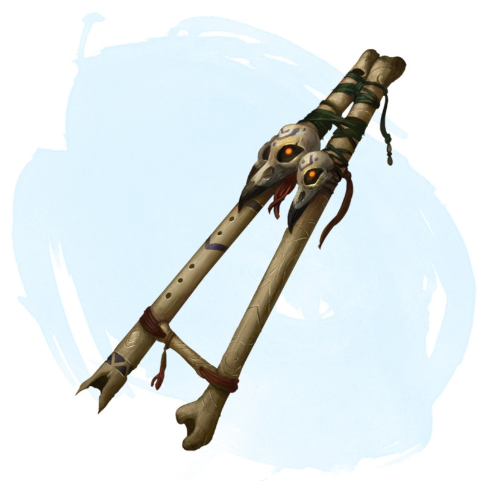

Flûte terrifiante
Objet merveilleux, peu commun
Vous devez avoir la maîtrise des instruments à vent pour pouvoir utiliser cette flûte. Elle a 3 charges. Par une action vous pouvez jouer de cette flûte et dépenser une charge pour produire un air envoûtant et mystérieux. Chaque créature dans les 6 mètres qui vous entend jouer doit réussir un jet de sauvegarde de Sagesse DD 15 ou être effrayée pendant 1 minute. Si vous le souhaitez, toutes les créatures à portée qui ne vous sont pas hostiles peuvent réussir automatiquement ce jet de sauvegarde. Une créature qui échoue peut retenter le jet de sauvegarde à la fin de chacun de ses tours, mettant ainsi fin à l'effet en cas de réussite. Une créature qui réussit le jet de sauvegarde devient immunisée contre cette flûte pour 24 heures. La flûte récupère 1d3 charges dépensées chaque jour à l'aube.
Dungeon Master´s Guide (SRD)
